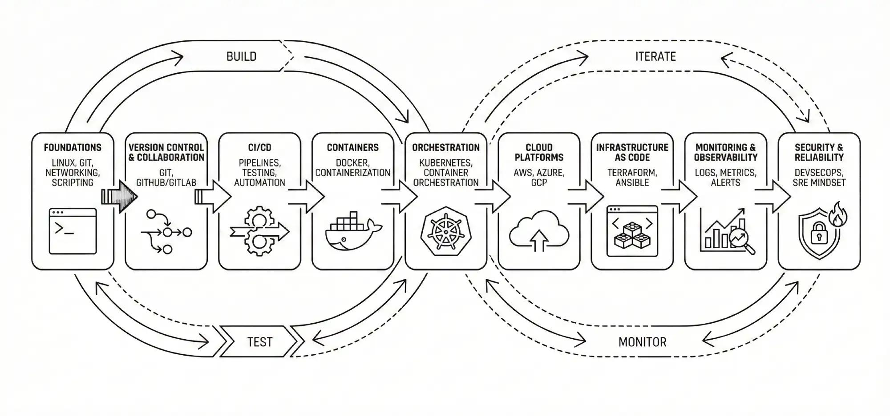

From Zero to CI/CD: Build Your First GitHub Actions Pipeline for a Simple Node/Python App
So, you've written some code. Maybe it's a sleek Node.js API or a clever Python script basically automating your life. You push it to GitHub, high-five yourself, and call it a day. But then, a week later, you change one line of code, push it again, and suddenly—everything breaks.
We've all been there. The "it works on my machine" syndrome is a rite of passage for every developer. But what if you could have a robot assistant that automatically checks your code every single time you save it? What if this assistant could run your tests, verify your build, and even tell you if you broke something before you merge it?
Enter CI/CD and GitHub Actions. In this GitHub Actions CI/CD tutorial, we are going to take you from absolute zero to a fully automated pipeline. Whether you are a Node.js fan or a Pythonista, by the end of this guide, you will have a professional-grade workflow running on your repository.
What is CI/CD (in Plain English)?
Before we touch a single line of YAML, let's demystify these acronyms. You'll hear them thrown around in every DevOps conversation, but the concept is surprisingly simple.
- CI (Continuous Integration): This is the practice of merging code changes frequently. Imagine you are writing a book with a co-author. CI is like checking each other's paragraphs every hour to make sure the story still makes sense, rather than waiting until the entire book is finished to realize the plot is full of holes. In code terms, CI automates the "Build" and "Test" phases.
- CD (Continuous Delivery/Deployment): This takes CI a step further. Once your code passes all those tests, CD is the process of automatically preparing it for release (Delivery) or actually pushing it to your live servers (Deployment). It’s like hitting "Publish" on your blog post automatically the moment your editor approves the draft.
Together, CI/CD creates a loop where you Plan, Code, Build, Test, Release, Deploy, Operate, and Monitor—constantly and smoothly.
Why Use GitHub Actions for CI/CD?
There are dozens of CI/CD tools out there—Jenkins, CircleCI, GitLab CI, Travis CI. So, why are we focusing on a GitHub Actions pipeline?
- It's Integrated: You don't need to sign up for a separate service or deal with complex webhooks. It lives right inside your repository.
- It's Free: For public repositories, GitHub Actions is completely free. for private repos, you get a generous 2000 free minutes per month.
- It's Community-Driven: There is a massive marketplace of pre-built "Actions" (like plugins) that you can drag and drop into your workflow, saving you hours of scripting.
- It's Perfect for Beginners: If you know basic YAML (which is just text with indentation), you can write a workflow.
Prerequisites
To follow along, you will need:
- A GitHub Account.
- Git installed on your local machine.
- A basic understanding of using a terminal/command prompt.
- A simple project (we will create one below).
Step 1: Prepare a Simple Project
You can't automate nothing. Let's create a minimal project to test our pipeline. Choose your fighter: **Option A (Node.js)** or **Option B (Python)**.
Option A: Simple Node.js Example
Open your terminal and create a new folder:
mkdir ci-cd-demo-node
cd ci-cd-demo-node
npm init -yNow, create a simple file called index.js:
// index.js
function add(a, b) {
return a + b;
}
module.exports = add;And a simple test file. We will use Jest for testing, so install it
first:
npm install --save-dev jestCreate index.test.js:
// index.test.js
const add = require('./index');
test('adds 1 + 2 to equal 3', () => {
expect(add(1, 2)).toBe(3);
});Finally, update your package.json to run jest when we type `npm
test`:
"scripts": {
"test": "jest"
}Run npm test locally to make sure it passes. If you see a green
checkmark, you are
ready to move on.
Option B: Simple Python Example
Prefer snakes? Let's do this in Python. Create a folder:
mkdir ci-cd-demo-python
cd ci-cd-demo-pythonCreate a file called app.py:
# app.py
def add(a, b):
return a + bCreate a test file called test_app.py utilizing the built-in
`unittest` framework:
# test_app.py
import unittest
from app import add
class TestApp(unittest.TestCase):
def test_add(self):
self.assertEqual(add(1, 2), 3)
if __name__ == '__main__':
unittest.main()Run python3 -m unittest test_app.py locally to verify it works.
Step 2: Push Your Project to GitHub
Now we need to get this code onto GitHub. The GitHub Actions workflow file lives in your repository, so the repo needs to exist first.
- Go to github.com/new
and create a
repository named
ci-cd-demo. - Initialize git in your local folder and push:
git init
git add .
git commit -m "Initial commit"
git branch -M main
git remote add origin https://github.com/YOUR_USERNAME/ci-cd-demo.git
git push -u origin main(Replace `YOUR_USERNAME` with your actual GitHub username).
Step 3: Create Your First GitHub Actions Workflow File
This is where the magic happens. GitHub Actions looks for special YAML files in a
specific
directory: .github/workflows/.
Create this directory structure in your project root:
mkdir -p .github/workflows
touch .github/workflows/ci.ymlOpen ci.yml in your code editor. A workflow file has three main
components:
- Name: What appears in the UI.
- On: The triggers (events) that start the workflow.
- Jobs: The actual work to be done.
Step 4: Writing the CI Workflow
Copy the code below that matches your chosen language.
Workflow for Node.js (CI/CD for Node.js)
Paste this into .github/workflows/ci.yml:
name: Node.js CI
# Trigger the workflow on push or pull request events but only for the main branch
on:
push:
branches: [ "main" ]
pull_request:
branches: [ "main" ]
jobs:
build:
# The type of runner that the job will run on (Ubuntu is standard)
runs-on: ubuntu-latest
strategy:
matrix:
node-version: [18.x, 20.x]
# See supported Node.js release schedule at https://nodejs.org/en/about/releases/
steps:
# Step 1: Check out the repository code
- uses: actions/checkout@v4
# Step 2: Set up Node.js environment
- name: Use Node.js ${{ matrix.node-version }}
uses: actions/setup-node@v4
with:
node-version: ${{ matrix.node-version }}
cache: 'npm'
# Step 3: Install dependencies
- name: Install Dependencies
run: npm ci
# Step 4: Run the actual build (if you have a build script)
- name: Build
run: npm run build --if-present
# Step 5: Run tests
- name: Run Tests
run: npm testExplanation:
matrix: node-version: [18.x, 20.x]: This is a cool feature. It runs your tests twice—once on Node 18 and once on Node 20—in parallel. This ensures your app works on multiple versions.npm ci: Similar to `npm install`, but meant for automated environments (Clean Install). It's faster and stricter.
Workflow for Python (CI/CD for Python)
Paste this into .github/workflows/ci.yml:
name: Python Application CI
on:
push:
branches: [ "main" ]
pull_request:
branches: [ "main" ]
jobs:
build:
runs-on: ubuntu-latest
steps:
# Step 1: Check out repo
- uses: actions/checkout@v4
# Step 2: Set up Python
- name: Set up Python 3.10
uses: actions/setup-python@v5
with:
python-version: "3.10"
# Step 3: Install dependencies
- name: Install dependencies
run: |
python -m pip install --upgrade pip
if [ -f requirements.txt ]; then pip install -r requirements.txt; fi
# Step 4: Run tests
- name: Test with unittest
run: python -m unittest discoverExplanation:
- The
run: |syntax allows multi-line commands. - We check if
requirements.txtexists before trying to install from it, making this script flexible.
Step 5: Triggering the Workflow and Reading Logs
Now for the satisfying part.
- Commit your new YAML file:
git add . git commit -m "Add GitHub Actions workflow" git push - Go to your repository on GitHub.
- Click on the Actions tab at the top.
You should see a workflow run listed there, probably spinning yellow (in progress) or green (success). Click on it. You can drill down into the "build" job and verify that every step passed. You will see the output of `npm test` or `python test` right there in the browser logs.
Try breaking it! Change your code so 1 + 2 = 4, commit, and push. Watch the Action turn red. You will get an email notification saying the build failed. That is the power of CI—it prevents bad code from sneaking in.
Optional Step 6: What about the "CD" part?
We have covered Continuous Integration (Testing). Deployment (CD) is the next logical step. While specific deployment steps depend heavily on where you are hosting (AWS, Heroku, Vercel, DigitalOcean), the concept is the same.
You would add a new step at the end of your job (or a new job that `needs: build`) to run the deployment command. For example, deploying a Node site to Vercel might look like this:
- name: Deploy to Vercel
uses: amondnet/vercel-action@v20
with:
vercel-token: ${{ secrets.VERCEL_TOKEN }}
vercel-org-id: ${{ secrets.ORG_ID}}
vercel-project-id: ${{ secrets.PROJECT_ID}}
vercel-args: '--prod'Notice the ${{ secrets... }}? You never put passwords in YAML. You
store them in
your repo settings under **Settings > Secrets and variables > Actions**.
Best Practices for Beginner GitHub Actions Pipelines
Writing a workflow that "just works" is great, but writing one that is maintainable, secure, and fast is better. Here are some pro tips to level up your game.
1. Pin Your Actions (Version Control)
In our examples, we used actions/checkout@v4. The v4
part is crucial.
If you just use @main or @latest, the author of that action might push
a breaking change tomorrow that crashes your pipeline. By pinning to a specific version (or even
a specific commit hash for maximum security), you ensure stability.
2. Smart Caching Strategies
We touched on cache: 'npm', but caching is a deep topic. GitHub
provides a specific
actions/cache action that allows you to cache any directory.
- For Node: Cache your
node_modules(or~/.npm). - For Python: Cache your
pipcache or virtual environment. - For Java: Cache Maven or Gradle dependencies.
Effective caching can reduce your build time from 10 minutes to 2 minutes, saving you time and money (if you are on a paid plan).
3. Fail Fast and Separate Jobs
Don't put everything in one giant job. If you have "Linting", "Unit Tests", and "Integration Tests", separate them.
jobs:
lint:
runs-on: ubuntu-latest
steps: ...
test:
needs: lint # Only runs if lint passes!
runs-on: ubuntu-latest
steps: ...Using needs: lint creates a dependency. If linting fails (which
takes 30 seconds),
the heavy tests (which take 5 minutes) won't even start. This is the definition of "Fail Fast."
4. Security First: Secrets and OIDC
Never, ever commit API keys, passwords, or tokens to your code. Use GitHub Secrets. For advanced users deploying to AWS or Google Cloud, look into OpenID Connect (OIDC). OIDC allows GitHub to authenticate with your cloud provider using a temporary token rather than a long-lived secret key. It is much more secure and becoming the industry standard.
Troubleshooting Guide: When Things Go Red
Your workflow will fail. It's a matter of when, not if. Here is how to debug common issues.
Indentations Matter (YAML Hell)
YAML is strict about spacing. If you use 2 spaces for one line and 4 for the next, it will break. Use a linter or a VS Code extension like "YAML support by Red Hat" to catch these before you push.
"Command not found"
If you see npm: command not found or
pytest: command not found, you
likely forgot the Setup step. You cannot run npm test if you haven't run
actions/setup-node first.
Permission Denied
If your script fails with EACCES: permission denied, you might need
to make your
script executable. add chmod +x ./your-script.sh as a step before running it.
Wrong Branch Triggers
Did you push code but nothing happened? Check your on: section.
usage of
main vs master is a common culprit. Newer repos use main,
older ones use master. Verify which branch you are actually pushing to.
FAQ: GitHub Actions CI/CD Tutorial
ACTIONS_STEP_DEBUG to
true. This will make the runner output much more verbose information
about what it is doing underground.
Conclusion
Congratulations! You just went from zero to a fully functional GitHub Actions pipeline. You have automated the boring stuff so you can focus on the fun stuff—building your app.
This is just the beginning. You can extend this pipeline to run security audits, generate documentation, or notify your Slack channel when a deploy finishes. The possibilities are endless. If you found this guide helpful, bookmark it and share it with a friend who's still manually testing their code!
Happy Automating!